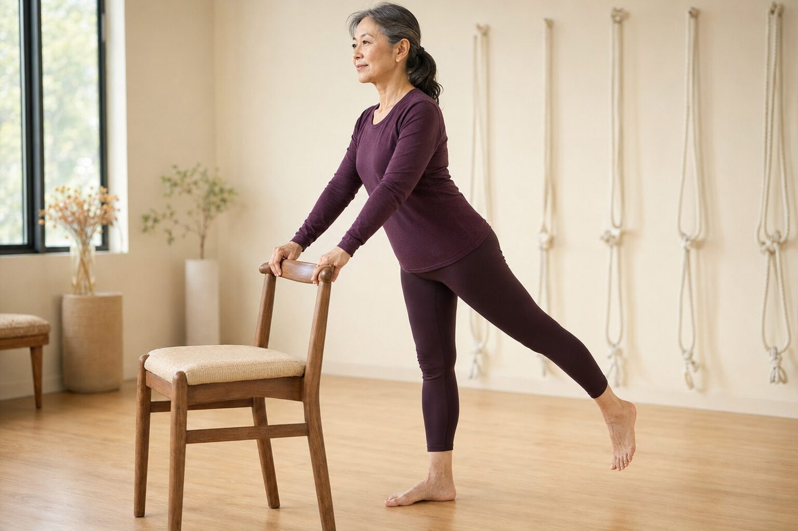

情緒真的會存在髖部裡嗎？從自律神經與腰大肌緊繃談起

- 「情緒存在髖部」在瑜伽圈流傳已久，常被玄學神化成「肌肉是情緒倉庫」；但從現代神經解剖學來看，其背後有堅實的生理學機制。
- 腰大肌（Psoas Major）連接腰椎、骨盆與大腿，並與橫膈膜及交感神經節緊密相連，是人體面對危機時本能啟動的「戰逃防禦肌肉」。
- 長期慢性心理壓力與久坐，會使腰大肌維持痙攣縮短狀態；當深層髖部在安全環境下獲得溫柔鬆開，神經系統切換至副交感修復期，常伴隨自然的眼淚釋放。
- 開髖練習嚴禁暴力硬折；壁繩瑜伽提供骨盆懸掛支持，但僅為身體筋膜舒緩，絕不能代替心理諮商或身心科專科醫療。
「情緒都堆積在髖部裡」——在瑜伽教室裡，你可能常聽到這句話。許多人起初聽得半信半疑，甚至覺得過於唯心抽象；直到某次在鴿子式（Pigeon Pose）或蜥蜴式停留時，胸口突然泛起一陣酸楚，眼淚沒來由地滑落，才驚訝於身體與心靈之間竟有如此幽微的連結。究竟，情緒真的會「存」在肌肉組織裡嗎？我們該如何用現代醫學與解剖學視角，看待這場深刻的身心對話？
破除迷思：組織裡沒有具體的「情緒倉庫」
首先，我們要先建立客觀認知：人體的肌肉、肌腱與筋膜細胞中，並沒有實體存放「悲傷」、「憤怒」或「童年創傷」的生化囊袋。
流傳過久的身心說法，常被大眾文化簡化為「你的右髖裝著憤怒、左髖裝著恐懼，按開來眼淚流出來就排毒了」，這種宣稱脫離了科學範疇。大腦的杏仁核、海馬迴與前額葉皮質才是處理記憶與情緒的中樞；但為什麼身體、特別是「髖部」，會對心理壓力產生如此劇烈且同步的生理反應？答案就在於——人體的自律神經系統與深層核心肌肉「腰大肌」的生理聯動。
解剖學揭秘：為什麼腰大肌被稱為「戰逃反應肌肉」？
在所有連接軀幹與下肢的肌肉中，最深層、影響最廣泛的就是腰大肌（Psoas Major）：
- 解剖位置奇特：它起源自胸椎第十二節與第一至第五腰椎橫突，向前向下穿越骨盆，最終附著在大腿骨內側的小轉子上。它是人體唯一一條直接連接「脊椎」與「雙腿」的核心肌肉。
- 與橫膈膜緊密嵌合：腰大肌的頂端筋膜與呼吸主肌「橫膈膜」的內側弓狀韌帶交織在一起。每一次呼吸，橫膈膜都在對腰大肌進行微幅的牽拉滑動。
- 交感神經叢的重鎮：腹腔交感神經幹與腹腔神經叢（Solar Plexus）正好緊貼在腰大肌表面。
在演化生物學上，當遠古人類面臨野獸襲擊或生死威脅時，大腦會本能啟動交感神經系統（戰或逃反應，Fight or Flight）。為了保護脆弱的腹部內臟並準備奔跑逃命，身體會第一時間命令腰大肌強烈收縮，將雙腿向胸口蜷縮（胎兒防禦姿態）。
現代人雖然不必躲避猛獸，但來自職場高壓、人際關係、財務焦慮或長年家庭責任，讓交感神經長期處在低度戒備的「慢性發炎」狀態。身體默默重複著這個原始反射：腰大肌日復一日持續痙攣縮短，髖關節周圍筋膜被牢牢鎖死。
為什麼開髖時會突然鼻酸想哭？
理解了神經反射，就不難明白為什麼深層開髖常伴隨情緒的釋放：
- 神經系統的「防禦卸載」：當長年緊繃痙攣的腰大肌與髖關節在安全、無威脅的環境中被溫和拉長，身體的本體感覺受器會向大腦傳遞訊號：「警報解除了，現在很安全。」
- 交感轉副交感（Rest and Digest）：神經系統從高度緊繃的戒備狀態瞬間切換至放鬆修復模式。這種強烈的神經生理轉折，會觸發迷走神經（Vagus Nerve）反應，引發呼吸加深、喉頭放鬆，而眼淚正是人體副交感神經活化、代謝壓力荷爾蒙（如皮質醇）的天然排解途徑。
- 長年被忽視區域的感知回歸：現代人習慣久坐，下半身常處於「感知鈍化」狀態。當深層髖部重新被溫柔覺察，那種「重新連接身體」的震顫感，往往會讓情緒細膩的人動容。
開髖大忌：嚴禁暴力硬壓與「越痛越有效」迷思
很多人聽說開髖能釋放身心，就請朋友或老師在自己背上用力踩、或者忍著劇痛把膝蓋往地面死命壓。這是極其危險且完全違背身心力學的做法！
髖關節是由厚實關節囊、髖臼唇（Labrum）與髂股韌帶包裹的精密球窩關節。如果強行用蠻力硬折：
- 肌肉內的肌梭會立刻啟動保護性的「牽張反射（Stretch Reflex）」，讓肌肉更死命收縮對抗，大腦再次感受暴力威脅，根本不可能放鬆。
- 極易造成髖臼盂唇撕裂傷、坐骨神經牽拉發炎，甚至加速髖關節退化軟骨磨損。
真正有效的開髖，講求的是「提供充足的支撐、留出呼吸的餘裕、溫柔停留」，讓神經系統在自願的情況下逐層鬆開防線。
壁繩瑜伽能提供什麼特別的幫助？
在地面進行深度開髖動作時，許多人常因腿部肌力不足或關節僵硬，上半身必須死命撐住地面，導致肩膀聳起、下背緊繃代償。
壁繩瑜伽在放鬆髖部時具有無可取代的優勢：
- 特製壁繩懸掛骨盆：利用骨盆懸掛帶分擔自重，雙手或骨盆有了穩固無比的支點，學員不必耗費體力「對抗地心引力」，大腦的跌倒恐懼立刻歸零。
- 創造關節牽引微空間（Traction）：壁繩的溫和牽引力能讓股骨頭在髖臼內獲得寶貴的減壓微隙，使深層腰大肌與梨狀肌在完全不受擠壓的狀態下被動伸展。
- 深層呼吸協同引導：在身體全然被承托的安全感中，老師能專注引導學員透過橫膈膜深呼吸，讓神經系統自然進入深層平靜。
嚴守界線：體態練習絕不能取代心理專科醫療
我們必須明確畫出合規與健康界線：體態調整與壁繩瑜伽是身體層面的肌肉放鬆與力學調整，絕不能代替專業的心理諮商或身心科醫療診斷。
若您近期面臨嚴重的急性創傷、重度憂鬱、持續性恐慌發作或創傷後壓力症候群（PTSD），請務必尋求合格心理師或精神專科醫師的醫療協助。運動可以是身心健康的溫和輔助，但絕不能視為心理疾病的治療手段。
了解您的骨盆排列與髖關節緊繃模式
長期的壓力習慣與久坐代償，往往直接反映在骨盆傾角與站姿重心的不對稱上。透過客觀的 2D AI 體態檢測，讓老師當面為您梳理目前的緊繃鏈條，規劃最溫和、無壓力的身心伸展步調。
預約首次 NT$299 AI 體態檢測（含老師當面解讀）結語：對自己的身體溫柔，是找回力量的開始
當你在練習中感受到緊繃、疲憊甚至眼眶微濕時，不需要慌張，也不必強求背後一定要有一個戲劇化的原因。這只是你的身體在告訴你：「這段時間你辛苦了，現在這裡很安全，你可以好好歇一歇。」學會聆聽身體的聲音，以耐心與敬畏陪伴它，身心的緊繃自然會如冰雪般緩緩融化。
本文為身心自律神經與肌肉解剖衛教知識分享，非醫療行為，亦不提供任何身心疾病之診斷或療效承諾。若有持續性的心理創傷、重度焦慮或情緒困擾，請尋求合格心理師或精神科醫師之專業協助。
常見問題
練習開髖瑜伽動作時突然想哭，是情緒真的被「擠」出來了嗎？
並非肌肉裡像倉庫一樣實體存放著情緒。生理學上的真實機制是：當長年處於高度防禦緊縮的深層腰大肌與髖關節筋膜獲得安全放鬆時，大腦自律神經系統會從交感神經警戒狀態切換至副交感神經修復狀態。這種深層卸防常伴隨情緒與眼淚的釋放，屬於神經系統的自然調節反應。
為什麼腰大肌被稱為人體的「戰逃反應肌肉」？
解剖學上，腰大肌（Psoas Major）上接胸椎第十二節與腰椎，向下穿過骨盆連接大腿股骨小轉子，並透過肌筋膜與呼吸橫膈膜、交感神經節緊密相連。當大腦感知壓力或威脅時，交感神經會本能發出訊號收縮腰大肌，使人體縮起胸腹準備戰鬥或逃跑；長期慢性壓力便會導致腰大肌持續痙攣縮短。
開髖練習是不是越痛越好、拉到極限效果才深刻？
絕對不是。髖關節是由厚實關節囊、纖維軟骨盂唇與強韌韌帶包裹的球窩關節。若強行用蠻力硬折開髖，大腦會感知受到創傷威脅，反而引發肌梭反射性強烈收縮對抗（牽張反射），甚至造成髖臼唇撕裂或坐骨神經牽拉傷。溫和、有支撐且緩慢的停留，才是讓神經系統願意卸下戒備的關鍵。
壁繩瑜伽能代替心理諮商或處理憂鬱焦慮情緒嗎？
不能。本館嚴格遵守身心健康界線，壁繩瑜伽是一項身體肌筋膜活動度與體態調整的練習，絕非心理諮商、身心科醫療或精神疾病診療。若有持續的情緒低落、創傷後壓力或重度焦慮困擾，請務必尋求合格心理師或精神科專科醫師的專業醫療協助。
壁繩瑜伽在放鬆髖部與減緩身心壓力上，能提供什麼具體幫助？
壁繩能將身體部分或全部重量穩定懸掛，消除學員在地面練習時擔心摔倒或肌肉代償支撐的緊繃感。在極高的安全感包覆下，骨盆與髖關節能以最小肌肉力道獲得空間延展，配合橫膈膜深層慢呼吸，有效促進副交感神經活化，幫助緊繃的下半身深度放鬆。